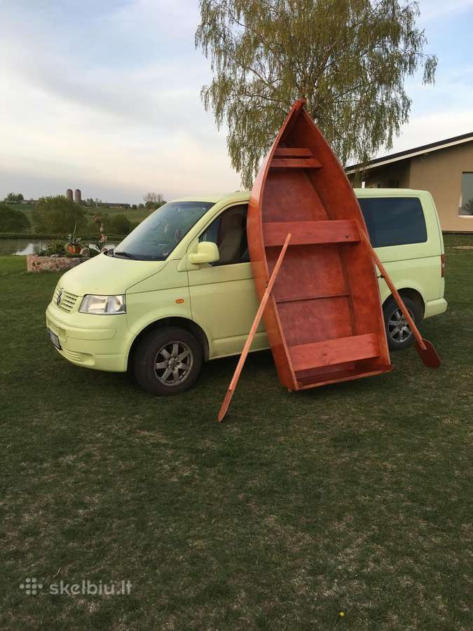

valtys skelbimai - Skelbiu.lt
2020.10.29 08:11
X Dėl geresnės Skelbiu.lt paslaugų kokybės naudojame slapukus (angl. cookies).
Naršydami toliau, patvirtinate, kad sutinkate su slapukais. Tai bet kada galėsite atšaukti, pakeisdami nustatymus. Skelbiu.lt slapukų politika . Lankomiausias
skelbimų portalas LT RU ( 0 ) Įsiminti skelbimai ( 0 ) Peržiūrėti skelbimai Paieškos ( 0 ) Prisijungti Registruotis valtys, Visi skelbimai (409) Gauti naujus skelbimus: Ekrane El. paštu + Įdėti skelbimą Įsiminti skelbimai (0) Skelbimų: 409 Tinkamiausi viršuje Tinkamiausi viršuje Naujausi viršuje Atnaujinti viršuje
NEPRALEISKITE NAUJŲ SKELBIMŲ
valtys, Visi skelbimai
Gaukite naujus skelbimus į ekraną Gaukite naujusskelbimus el. paštu Marijampolė, ... spalio 25 d. 1
Mobilus sodavimas ir smėliavimas visoje Lietuvoje.
Atliekame specializuotą įvairių paviršių srautinį valymą ir padengimą. Kombinuodami suspaustą orą, kartu su skirtingais abrazyvais, valome ir atnaujiname įvairius paviršius. Galime nuvalyti tokius paviršius kaip: Mūriniai ir betoniniai... Kaunas prieš 2 d. 1Pvc valties priekaba, Yamaha 9.9
Priekaba cinkuota savos gamybos, gaminta pagal valti ( pas ALVYDA, MB OLRA ) 2011, registruota su tech. apziura, LED galiniai zibintai atsparus vandeniui ( nebutina nuimineti ileidziant valti), priekaba su lingem . 880 eur Variklis Yamaha... Būklė: naudota 800 € Kaunas prieš 1 val. 1Pripučiamos valtys geromis kainomis
Didelis valčių pasirinkimas. Elektriniai valčių varikliai, akumuliatoriai. Valčių ilgiai: 245 cm. dugnas lentelės, pridedamas transas 260 cm. dugnas lentelės, pridedamas transas 275 cm. dugnas lentelės, pridedamas transas 280 cm. dugnas... Būklė: nauja 245 € Švenčionių r. prieš 2 d. 1Parduodu
Parduodu:valtį ilgis 2.9m plotis 1.2m 300€ Metalinį sandeliuką aukstis 2m,gilis 2m ,plotis 4m 260€ Seifą 50€ aukštis 1.35m, plotis 0,6m, gilis 0,5m Būklė: naudota 300 € Kaunas prieš 2 d. 1 Parduota per 1 d.Kolibri K280t
Parduotu puikios bukles valti, zvejota gal 10 kartu Jokiu lopu, jokiu subraizymu. Neleidzia Pirkta is valciu centro Dar yra virs metu garantijos Dugnas - knyga 3 daliu + esu pasidares dvi dalis dugno is jurines faneros i valties galus Jei... Būklė: naudota 240 € Panevėžys spalio 20 d.Pvc valtys
Akcija 360 su aliuminiu dugnu 799 eur. Akcija 320 su aliuminiu dugnu 699 eur. Komplektacijoje 2 slankiojantys suoliukai. Meluga naujos valtys su aliuminiu dugnu, 320,360 m ilgio. Garantija, dokumentai registracijai,CE sertifikatas. ... Būklė: nauja 699 € Kaunas rugsėjo 19 d.Rusiškos guminės valtys
Sveiki, Rusiškos naudotos valtys su pilnais komplektais: T.y. Suoliukai, pagalvėlės, pompa, irklai ir t.t. Siunčiu į visus miestus. Yra visokių modelių pvz.: Ufimka, Omega, Nyrok, Ivolga, Jaz ir kt. kaina nuo 80 iki 180 eurų. Būklė: naudota 80 € Ignalinos r., ... spalio 14 d.Medinės Valtys (Gamyba)
Gaminu medines valtis įvairių dydžių, iš natūralios balteglės medienos. Valtys tvirtos, stabilios ir ilgaamžės. Tinka žvejybai ir poilsiui. Kaina nuo 350€. Galime pristatyti į visus Lietuvos miestus. Valties išmatavimai: Ilgis: ... Būklė: nauja 350 € Alytus prieš 1 d.Fanerines valtys
tel. 867605251 valtys gaminamos is jurines vandeniui atsparios faneros, yra lengvos, 30-40 kg.stabilios ant vandens . Pats karkasas vadinamas remu pagamintas is azuolo, todel yra tvirtos ir ilgaamzes.dugnas lenktas, galinis bortas... Būklė: nauja 270 € Kaunas prieš 2 d.Olandija, plastikinės valtys
Parduodu komplekta : 1. Valtis 4,10-165 cm. 2. Variklis Suzuki 4 taktis 9,9 a. g. Galima sukelti iki 20 a.g. 3. Elektrinis variklis 55 lbs. 4. Akumuletorius 110 amp. h. 5. Eholotas. Viskas veikia kaip priklauso. Dokumentai visi... 3 800 € Reklama Trakų r. spalio 13 d.Rusija Progres, aliuminės valtys
Parduodu rusiska motorine valti,ne kiaura,ne registruota.Pirkimo sutartis.Traku raj. Aukstadvario miestelis. Tipas: Aliuminės valtys. Sėdimų vietų skaičius: 6. Gamintojas: Rusija. Modelis: Progres. Nauja / naudota: Naudota. Defektai: Be... 490 € Trakų r. spalio 23 d.Nauja savos gamybos fanerinė valtys
Parduodu fanerines savos gamybis valtys. iIlgis 2.9m., plotis 1,30m, borto aukštis 45cm, dugno storis 9mm, sonu 7mm. Su irklais. Galima kabinti varikli, lengvai vezti ant automobilio stogo, pagaminta is vandens atsparios faneros. Kaina priklauso... Būklė: nauja 190 € Alytus prieš 1 d.Valtis Valtis, medinės valtys
Valtys gaminamos is jurines vandeniui atsparios faneros, pati valties konstrukcija pagaminta is azuolo, todel yra tvirtos ir ilgaamzes yra stabilios ant vandens, dugnas lenktas, lengvos iki 40 kg.. galima transportuoti ant automobilio stogo... 270 € Vilnius, ... prieš 1 d.Elling valtys - patraukli kaina !
Kokybiškos ELLING valtys už patrauklią kainą. 15 metų gamybinė patirtis. ES prekybos partnerių įvertinimas. www.valciuparduotuve.lt UAB "Magnus ES" - oficialus "Elling" valčių atstovas Lietuvoje , Latvijoje , Estijoje. * Suteikiame garantiją... Būklė: nauja 409 € Klaipėda prieš 2 d.Buster Xsr Buster Xsr, aliuminės valtys
Naujasis 2021 metų modelis BUSTER XSR Ilgis: 4,18 m Plotis: 1,76 m Valties svoris : 210 kg Maksimali keliamoji galia: 442 kg Vietų skačius: 4 Variklio galia: 9 hp - 20 hp Variklio kojos ilgis : L Vairo mechanizmas Vietos kuro bakui ir... 5 750 € Kita rugsėjo 7 d.Almarcraft Almarcraft 595, aliuminės valtys
Parduodamas naujas aliuminis kateris. Korpusas pagamintas iš jūrinio aliuminio, dugno storis 5mm bortas 4mm. Pilnai užbaigtas korpusas. Korpuso ilgis 5,95, plotis 2.20. CE. Kategorija C. Keleiviu skaičius 6. Maksimalus svoris 850 kg.Variklio... 12 500 € Vilnius, ... prieš 1 d.Kolibri valtys iš patikimų rankų !
KOLIBRI irklinės ir motorinės valtys iš patikimų rankų ! www.valciuparduotuve.lt UAB "Magnus ES" - oficialus "KOLIBRI" valčių atstovas Lietuvoje, Latvijoje. * Suteikiame garantiją: 3 metų PVC medžiagai ir siūlių hermetiškumui, 1 metų... Būklė: nauja 479 € Šiauliai spalio 5 d.Autoplast Trimaranas, plastikinės valtys
AKCIJA! Naujas 2019m. modelis Trivietė trimarano tipo valtis praaukštintais bortais su išimama vidurine daiktadėže.Pilnai dviguba. Ilgis-3, 1m plotis-1, 35m.Borto aukstis 0,55transas 0,38m,svoris 55kg, keliamoji galia 250kg-300kg, variklio... 720 € Klaipėda rugpjūčio 18 d.Kolibri, pripučiamos valtys
Didelis kolibri valčių pasirinkimas tik pas mus, tik Hobio centre! Galime sukomplektuoti valtis su varikliais arba be jų! Išpildysime visus jūsų lūkesčius. Atvykite pas mus ir mes padėsime jums susikomplektuoti jūsų svajonių laivą. Hobio... 415 € Klaipėda prieš 2 d.Zodiac Cadet 350 Alu, pripučiamos valtys
Zodiac valtis pagaminta Prancūzijoje, pripučiamų sekcijų skaičius 3+1, Irklai, aliuminės grindys, pripučiamas kylis, baliono skersmuo 0.45m Didelis Zodiac valčių pasirinkimas Oficialus Zodiac atstovas Lietuvoje UAB \"YAMATECHA\" Cadet... 1 750 € Kita spalio 4 d.Handmade Historical style boat, medinės valtys
Historical style wooden boat, handmade with full SIMRAD electronics, autopilot, water wc and internal WEBASTO heating. There can sleep 2-3 adults or 2 adults and 2-3 childrenIt Hydraulic 2 wheels inside and outside. You can enjoy... 59 900 € Šiauliai spalio 5 d.Šiauliai Dviviete, plastikinės valtys
AKCIJA! Ilgis-2,6m Plotis-1,15m Svoris-35-40kg Keliamoji galia-160kg Naujos,dvigubos,lengvos valtys.Plokscias dugnas, todel stabilios, neskęsta(suformuoti oro burbulai).Daiktadėže,3 kilpos inkarams,valties galas sustiprintas,galima kabinti... 400 € Šiauliai spalio 13 d.Valtys
Būklė: nauja 220 € Elektrėnai spalio 19 d.Valtys
Nauja pora kart plaukta dokai yra. Rus valtys 320 ilgio kietas dugnas minkštos sedines .su kiliu kaina derinama. Būklė: nauja 450 € E. parduotuvės prekė Admiral AM-375 pigu.lt 751 € E. parduotuvės prekė Admiral AM-320C pigu.lt 638 € Daugiau prekių Kainos.lt » 1 2 3 4 5 6 Įsiminti skelbimai Įdėkite skelbimąPopuliarios paieškos:
valtys vilnius
valtys klaipeda
valtys zvejybai
valtys kolibri
valtys siauliai
valtys moletu r
valtys kalvarija
valtys alytus
valtys pvc
valtys druskininkai
valtys kaunas
valtys panevezys
valtys varenos r
valtys plunges r
valtys zvejyba
Prisijunk ir rask savo įsimintus skelbimus visur – kompiuteryje, telefone, planšetėje ARBA Jungtis su Facebook Jungtis su Google Skelbiu.lt pagalba: +370 664 55727 Darbo laikas: I-V 08:20 - 17:00 Naudojimo taisyklės / D.U.K. Kontaktai Svetainės struktūra D I G I N E T